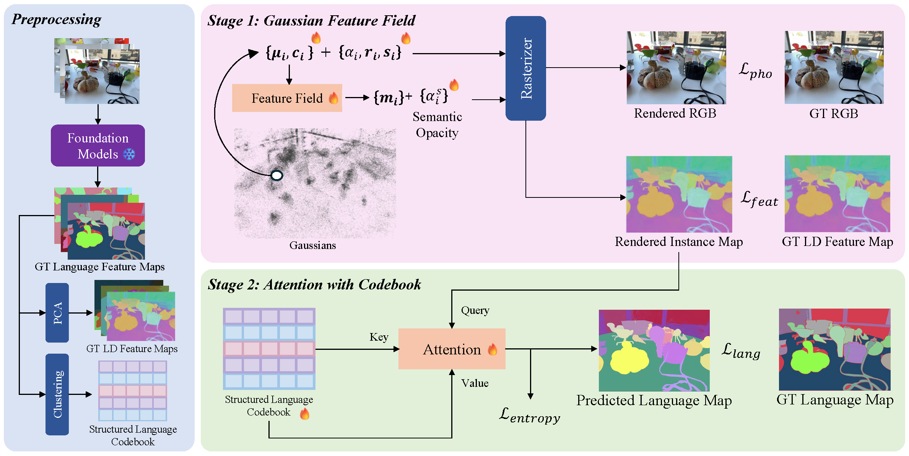

Understanding open-vocabulary 3D scenes with Gaussian-based representations remains challenging due to fragmented and spatially inconsistent semantic predictions across multi-view observations. In this paper, we present OpenGaFF, a novel framework for open-vocabulary 3D scene understanding built upon 3D Gaussian Splatting. At the core of our method is a Gaussian Feature Field that models semantics as a continuous function of Gaussian geometry and appearance. By explicitly conditioning semantic predictions on geometric structure, this formulation strengthens the coupling between geometry and semantics, leading to improved spatial coherence across similar structures in 3D space. To further enforce object-level semantic consistency, we introduce a structured codebook that serves as a set of shared semantic primitives. Furthermore, a codebook-guided attention mechanism is proposed to retrieve language features via similarity matching between query embeddings and learned codebook entries, enabling robust open-vocabulary reasoning while reducing intra-object feature variance. Extensive experiments on standard 2D and 3D open-vocabulary benchmarks demonstrate that our method consistently outperforms prior approaches, achieving improved segmentation quality, stronger 3D semantic consistency and a semantically interpretable codebook that provides insight into the learned representation.

We visualize multi-view renderings of 3D Gaussians, including RGB, depth, low-dimensional semantic features, and language features, demonstrating the versatility of our representation. We further show text-driven 3D queries, where the corresponding objects are selected and rendered separately. Finally, we compare our language features with LangSplatV2, where its features exhibit noticeable intra-object variation and lack object-level consistency. In contrast, our method produces highly consistent language features across each object, benefiting from the proposed Gaussian Feature Field and codebook-based attention mechanism.
We show 3D open-vocabualry visualization on Figurines, where the corresponding objects are selected and rendered separately. Compared with LangSplatV2, our method can segment objects in 3D more consistently.
LangSplatV2 exhibits noticeable noise in predicted semantic point clouds during 3D OVS. Our method retrieves nearly all object points and produces more complete and coherent segmentations.